Barnkläder
Färgglada och hållbara kläder för barn, från nyfödd till 6 år.
 Hangtag (PDF)
Visitkort (PDF)
Storleksguide
Hangtag (PDF)
Visitkort (PDF)
Storleksguide
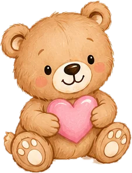
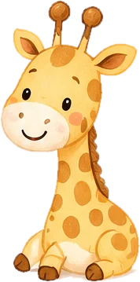
Ny butik i Ulricehamn
Barnkläder, presentartiklar, konst och lek – fyra varumärken under samma tak.
Kom på öppet hus 2 novemberÖppet tis–fre 10–18 • lör 10–14
Storgatan 15, Ulricehamn • Hitta hit
Välkommen in till Storgatan 15 i Ulricehamn
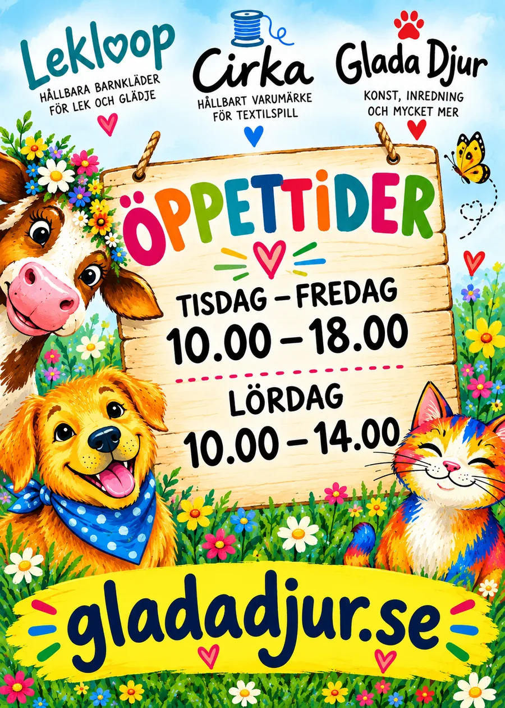
| Dag | Tid |
|---|---|
| Tisdag–fredag | – |
| Lördag | – |
| Söndag–måndag | Stängt |
Barnkläder • Presentartiklar • Konst • Lek
Barnkläder
Färgglada och hållbara kläder för barn, från nyfödd till 6 år.
Hangtag (PDF)
Visitkort (PDF)
Storleksguide
Presentartiklar
Handgjorda produkter skapade av återbrukade textilier.
 Hangtag (PDF)
Se väskorna
Hangtag (PDF)
Se väskorna
Konst
Konst fylld av färg, glädje och personlighet.
Lek
Lek och leksaker som skapar roliga stunder.
 Möt Blåbert
Möt Blåbert
Designade för rörelse, återbruk och växande barn
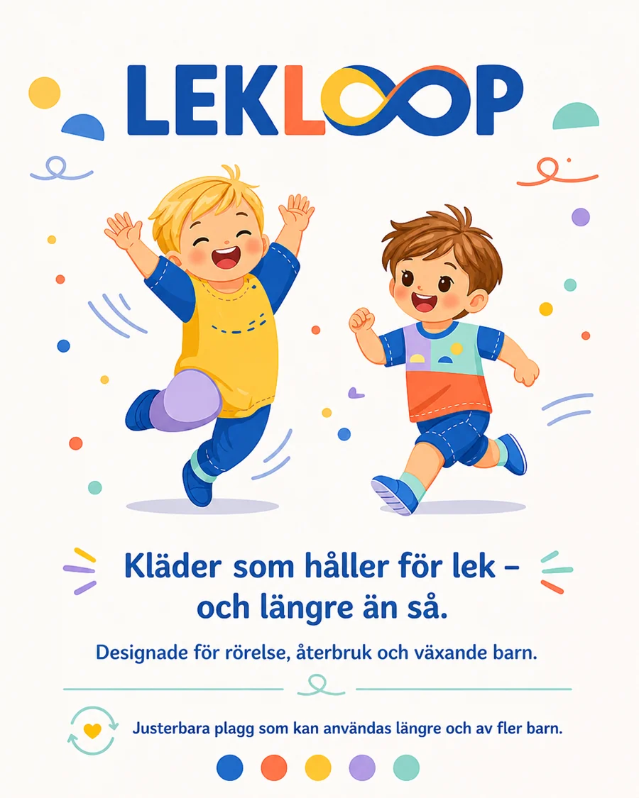
Kläder som håller för lek – och längre än så.
Lekloop gör färgglada plagg för barn som springer, hoppar och upptäcker världen. Plaggen är justerbara, så de kan användas längre och gå vidare till fler barn.
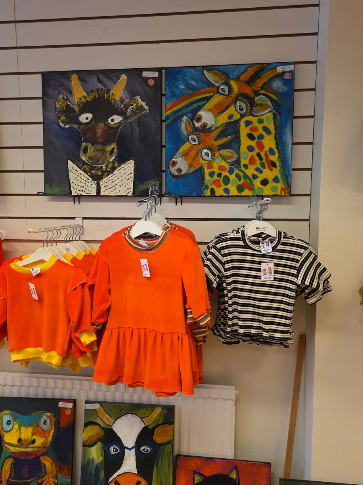
Från nyfödd till 6 år – kläder som växer med ditt barn
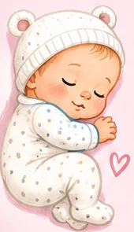
| Storlek | Ålder (ca) |
|---|---|
| 50 | Nyfödd (0–1 månad) |
| 56 | 1–2 månader |
| 62 | 2–3 månader |
| Storlek | Ålder (ca) |
|---|---|
| 68 | 3–6 månader |
| 74 | 6–9 månader |
| 80 | 9–12 månader |
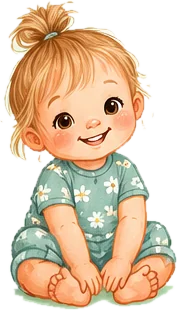
| Storlek | Ålder (ca) |
|---|---|
| 86 | 1–1,5 år |
| 92 | 1,5–2 år |
| 98 | 2–3 år |
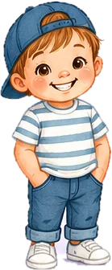
| Storlek | Ålder (ca) |
|---|---|
| 104 | 3–4 år |
| 110 | 4–5 år |
| 116 | 5–6 år |
Tänk på att barn växer olika snabbt, så storlekarna är ungefärliga och kan variera mellan olika märken och modeller. Osäker? Kom förbi butiken så hjälper jag dig att hitta rätt.
Handsydda dinosaurier med eget födelsebevis
En mjuk och modig dinosaurie som älskar att få nya vänner. Varje Blåbert är sydd för hand av utvalda tyger och är redo att få en alldeles egen liten vän.


Alla dinosaurier är unika – precis som sina nya kompisar.
Varje tavla är unik och målad för hand med barnets namn.

Färgstarka djur målade för hand – kom och hitta din favorit.
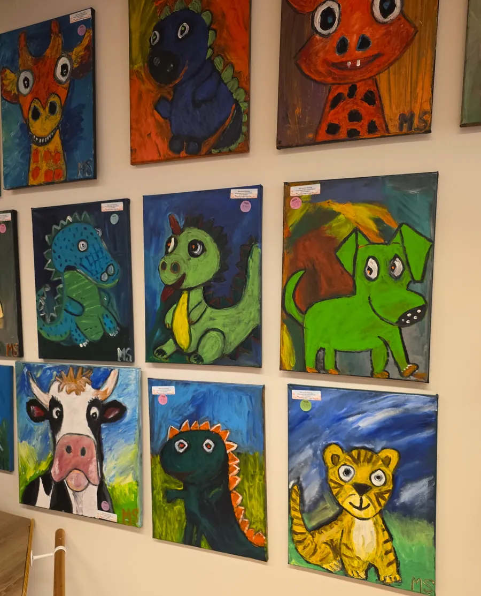
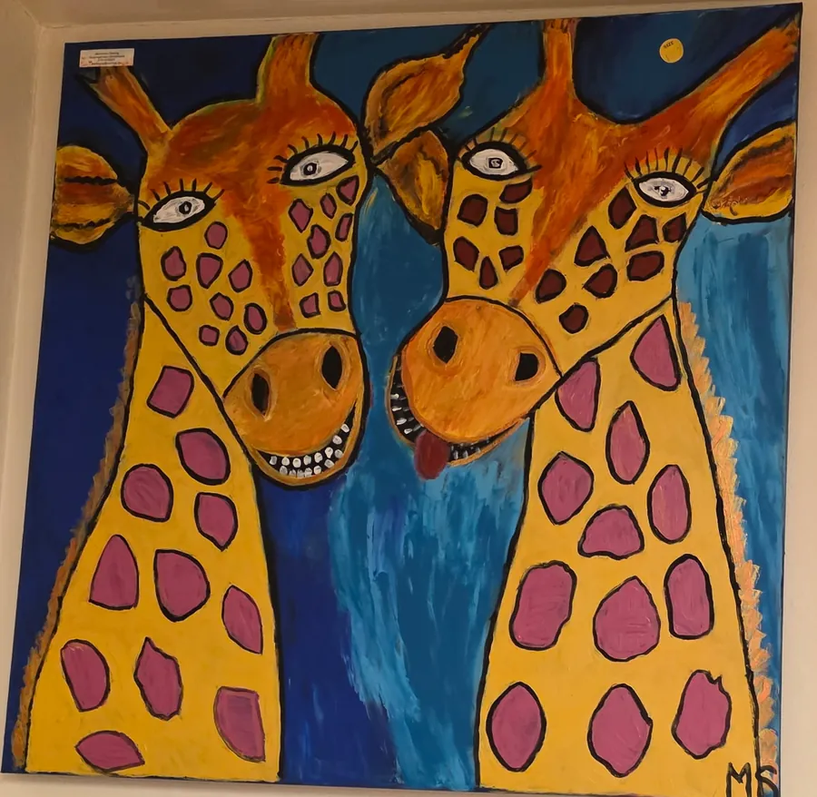
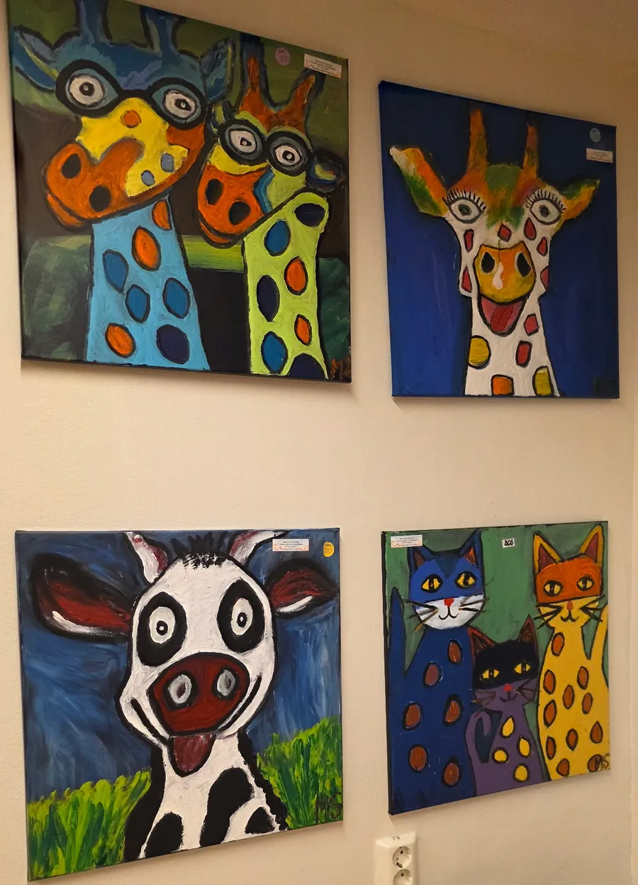
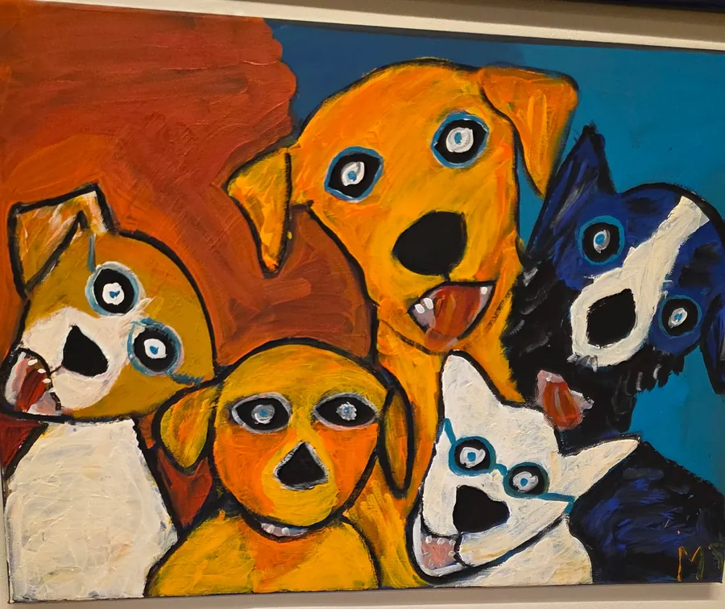
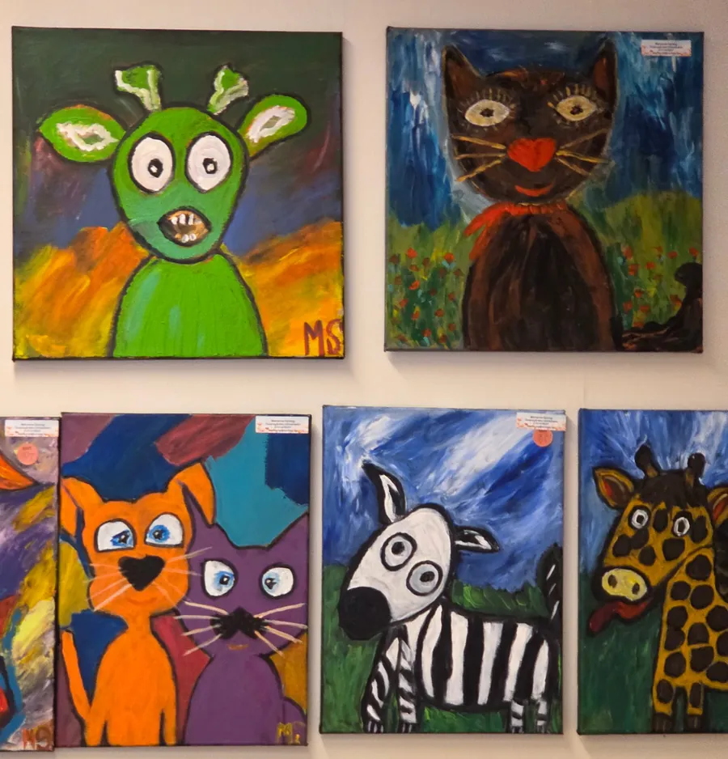
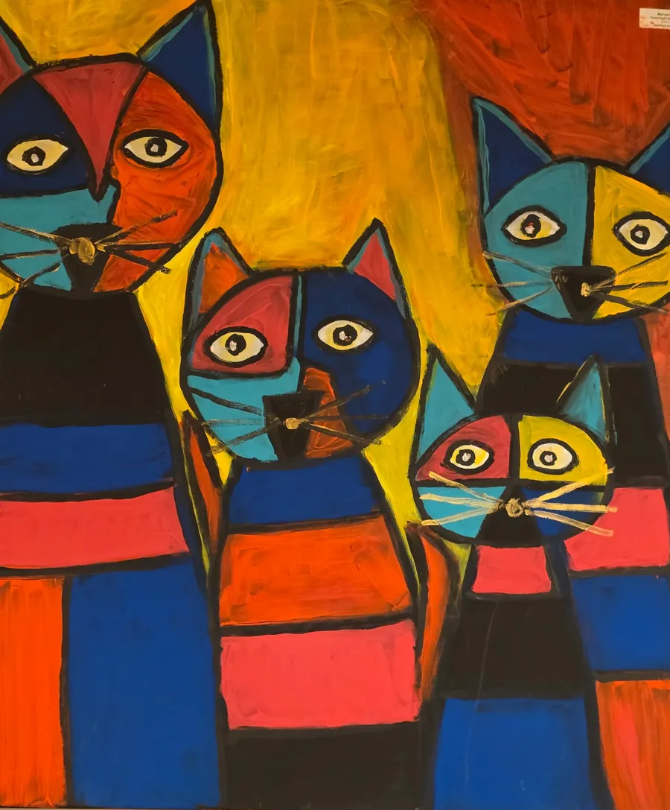
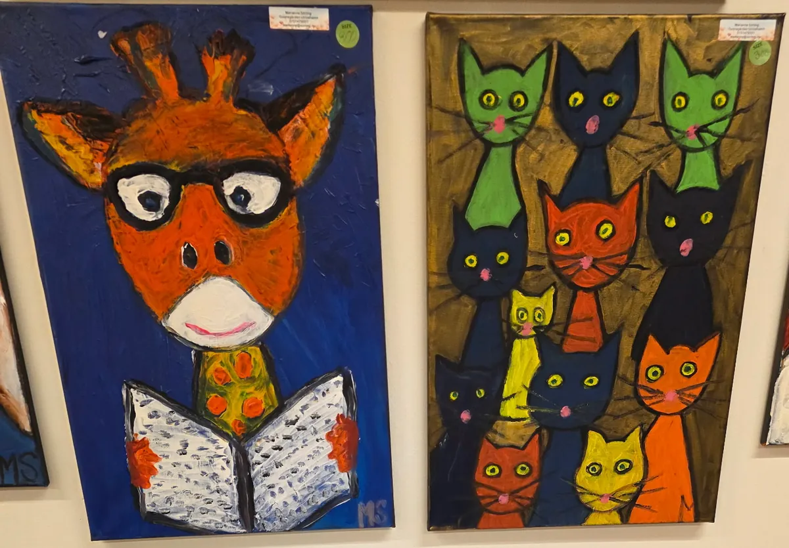
Återbruk • Kreativitet • Kvalitet

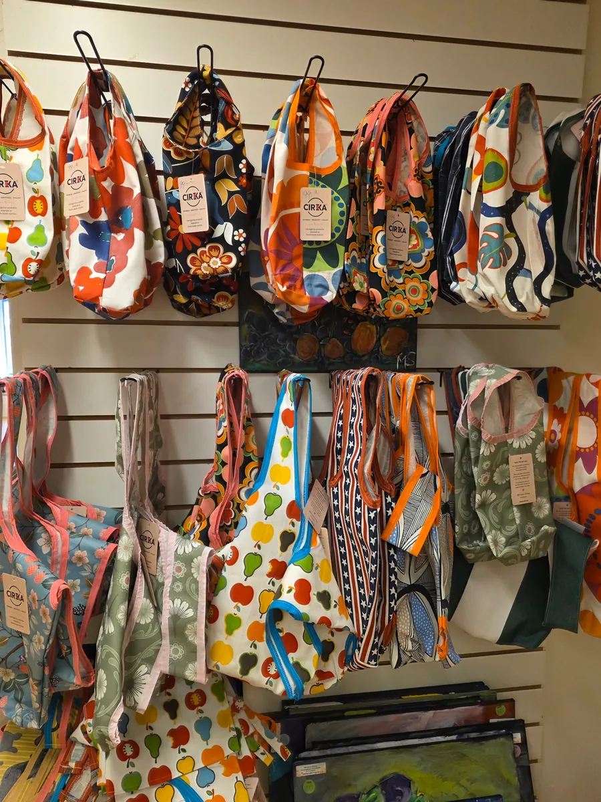
Varje produkt är unik och tillverkad av omsorgsfullt utvalda återbrukade textilier.
Kika in i skyltfönstret – här möts kläder, konst, återbruk och lek.

Jag öppnar min nya butik i Ulricehamn! Kom och fira tillsammans med mig.
Kl. 16.00–20.00
Välkommen att titta runt och upptäcka mina fyra varumärken!

Meddela gärna om du kommer via sms:
Varmt välkommen!
Marianne Sörling
Storgatan 15Öppettider
Tisdag–fredag 10.00–18.00
Lördag 10.00–14.00